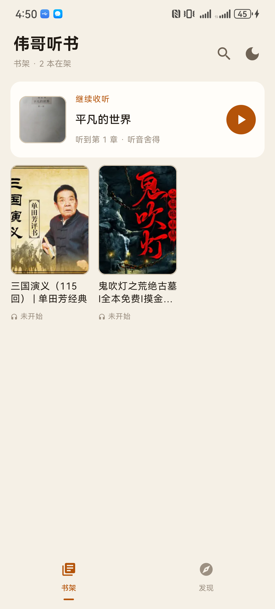
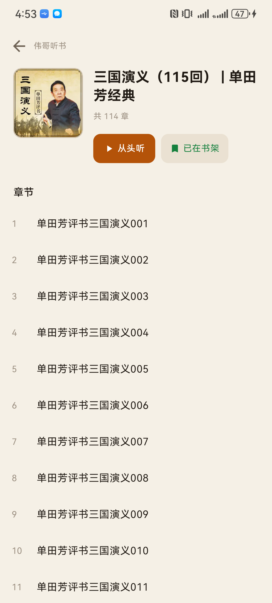
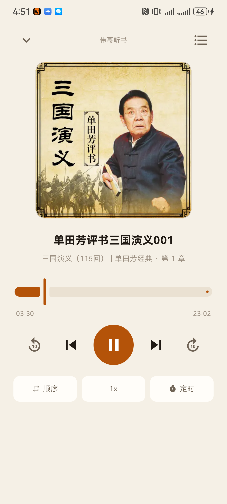

华为 BRA-AL00 / Android 12，v1.3.2 release 版实拍（R8 压缩后 2.46 MB）。 界面是当前状态：两个页签、首页抬头「伟哥听书」、播放页封面 960 那档。 内容全部来自内置的喜马拉雅接口：搜索 → 专辑音轨 → MP3 直链，不经过任何网页解析。
图标：一本书，封面上刻着 W。
W 是「伟」的首字母；3:4 的圆角封面 + 右上角三条书页线说明它是本书。
暖橙 #FF7A18
配 #0A0908，跟界面同一套色。
图里四档尺寸含圆形遮罩，验证过不会被系统裁掉关键形状。



| 体积 | debug 21 MB → release 2.46 MB（R8 + 资源压缩） |
| 签名 | 正式密钥 CN=WeiGe Tingshu，有效期 10000 天；密钥与口令都不进仓库 |
| 实测 | 装上启动无崩溃 → 深链开专辑 114 章正常 → 播放 state=3、进度 03:30 / 23:02、通知元数据完整 |
| 顺手修的 | 深链进来的书没有主播名时，不再显示「佚名」，直接空着 |
| 注意 | 和 debug 版签名不同，装过 debug 包的必须先卸载（会清掉书架与进度） |
| 新图标 | 书 + W 的抽象标；新增 Android 13 主题图标单色层（书画描边，否则实心封面会把 W 糊成一坨） |
| 怎么定的 | 先画了十几个方向对比：tools/render_icon.py 会在本地渲染并模拟圆形遮罩，就是靠它否掉了「书页错层」——遮罩会把多出来的页角切掉 |
| 删掉书源页 | 底部从三个页签变两个（书架 / 发现）。源只有一个且写死在代码里，留个管理页只会让人以为需要配置 |
| 品牌露出 | 首页抬头「伟哥听书 · 有声小说」；详情页、播放页顶栏中间都是「伟哥听书」 |
| 顺手加的 | 首页右上角原来的「更多」换成日夜切换（书源入口没了，这个位置给常用功能） |
| 搜索 → 章节 | ✓ 20 条结果 / 326ms，114 章 / 309ms（6 页并发取全） |
| 音频直链 | ✓ aod.cos.tx.xmcdn.com/...mp3，206 audio/mpeg，不带时效 |
| 后台播放 | ✓ 按 Home 后 position 21s → 39s 继续走 |
| 前台服务 | ✓ isForeground=true，foregroundId=2001 |
| 通知栏 / 锁屏 | ✓ channel=ts_playback_v1，importance=3，vis=PUBLIC，3 个按钮，标题=章节名、副标题=书名 |
| 进度记忆 | ✓ force-stop 后重启，「继续收听」仍在，显示听到第 1 章 |
| 收费过滤 | ✓ 搜「斗破苍穹」前 4 个付费专辑（is_paid=true）不再出现在结果里 |
| 断线 | ⚠ 华为 USB 在锁屏/息屏后会挂起，adb 会周期性掉线（不是 App 问题） |